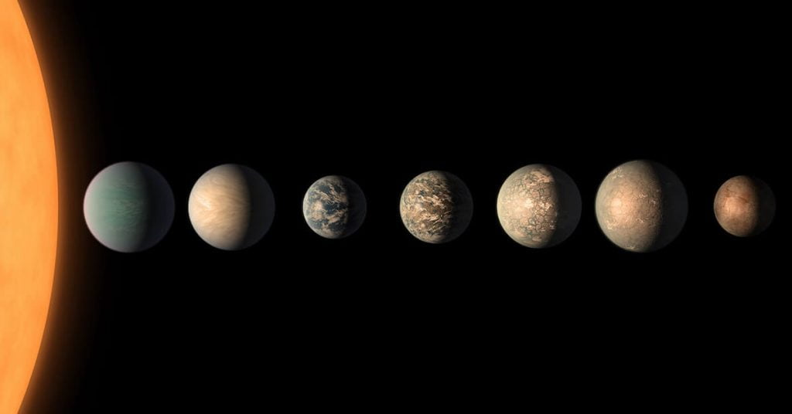

ဒီ အရေအတွက်ဟာ ဂြိုဟ်ဖြစ်ကြောင်း တိတိကျကျ သက်သေ ပြနိုင်တဲ့ အရေအတွက်ပဲ ဖြစ်ပြီး အတိအကျ သက်သေမပြ နိုင်သေးတဲ့ ဂြိုဟ်လို့ ယူဆရတဲ့ အရာတွေ ထည့်သွင်း ရေတွက်ထားခြင်း မရှိပါဘူး။
ဒီ ပြင်ပဂြိုဟ် (Exoplanet) တွေရဲ့ စာရင်းကို နာဆာ အဖွဲ့ကြီးက NASA Exoplanet Archive မှာ ထိန်းသိမ်း မှတ်တမ်းတင် ထားပါတယ်။ မကြာမီ အချိန်ကပဲ ပြင်ပဂြိုဟ် အသစ် ၆၅ လုံး ဒီ စာရင်းထဲ ထည့်သွင်း အပြီးမှာ အရေအတွက် ၅,၀၀၀ ကျော်သွားတာ ဖြစ်ပါတယ်။
အတိအကျ ဆိုရင် ဒီ ဆောင်းပါး ရေးတဲ့ ၂၄ မတ် ၂၀၂၂ မှာ ပြင်ပဂြိုဟ် အရေအတွက် ၅,၀၀၅ လုံး ရှိနေပြီလို့ ဒီ မှတ်တမ်းအရ သိရှိရပါတယ်။
ဒီလို ပြင်ပဂြိုဟ် အရေအတွက် အလုံး ၅ ထောင် ကျော်သွားတဲ့ မှတ်တိုင်ကို ပြီးခဲ့တဲ့ တနင်္လာနေ့ ၁၆ မတ် ၂၀၂၂ နေ့က စိုက်ထူလိုက်နိုင်တာလို့ နာဆာ အဖွဲ့ရဲ့မှတ်တမ်းအရ သိရှိရပါတယ်။
ဆက်စပ်ဆောင်းပါး – ကမ္ဘာနှင့် အရွယ်တူ ဂြိုဟ်များရှာတွေ့
ဒီ ပြင်ပဂြိုဟ် မှတ်တမ်း စာရင်းမှာ နာဆာ အဖွဲ့ကြီးက တွေ့ရှိ ခဲ့တဲ့ ဂြိုဟ်တွေတင် မက အခြား သုတေသန အဖွဲ့ ပေါင်းစုံကနေ ရှာဖွေ တွေ့ရှိပြီး ပြင်ပဂြိုဟ် အဖြစ် သက်သေ ပြနိုင်တဲ့ ဂြိုဟ်တွေကို စနစ်တကျ မှတ်တမ်း ပြုစုထားခြင်း ဖြစ်ပါတယ်။ ဒီဂြိုဟ်တွေကို သုတေသန နည်းလမ်း မျိုးစုံ အသုံးပြု ရှာဖွေ ထားကြတာ ဖြစ်ပါတယ်။
“ဒါက ဂဏန်း အရေအတွက် တစ်ခုထဲ မဟုတ်ဘူးလေ” လို့ ဒီ မှတ်တမ်းကို ထိန်းသိမ်းရာမှာ တာဝန်ရှိသူ တစ်ဦး ဖြစ်တဲ့ သုတေသီ ဂျက်ဆီ ခရစ်စ်တန်ဆန် (Jessie Christiansen) က ရှင်းပြပါတယ်။ သူမဟာ ပါဆာဒီးနား မှာ ရှိတဲ့ ကာလီဖိုးနီးယား နည်းပညာ တက္ကသိုလ် (Institute at the California Institute of Technology in Pasadena) က ပြင်ပဂြိုဟ် သုတေသန သိပ္ပံ ပညာရှင် တစ်ဦးလဲ ဖြစ်ပါတယ်။
“ဒီ ဂြိုဟ် တစ်လုံးချင်း စီဟာ ကမ္ဘာသစ် တစ်ခုပဲလေ။ ဂြိုဟ် အသစ်စက်စက် တစ်စင်းပဲ။ ဂြိုဟ် အသစ် တစ်လုံး တွေ့တိုင်း တွေ့တိုင်း ကျွန်မတို့တွေ စိတ်လှုပ်ရှား ရပါတယ်။ ဘာကြောင့်လဲဆို ဒီဂြိုဟ်သစ်ဟာ ဘယ်လို ဂြိုဟ်မျိုး ဖြစ်မလဲ ဆိုတာကို မသိလို့ပါ” လို့ သူမက ဆက်ရှင်းပြပါတယ်။
အမှန် ပြောရရင် ကျွန်တော်တို့ဟာ ပြင်ပဂြိုဟ် ရှာဖွေရေး ရွှေခေတ်မှာ ရောက်နေတာပါ။ နေအဖွဲ့အစည်း ပြင်ပမှာ ဂြိုဟ်တွေ ရှိမယ်လို့ သိပ္ပံ ပညာရှင် တွေက ခန့်မှန်း ခဲ့ကြပေမယ့် ပထမဆုံး ပြင်ပဂြိုဟ်ကို ၁၉၉၀ ကျော်မှ ရှာဖွေ တွေ့ရှိခဲ့တာ ဖြစ်ပါတယ်။

အသွင်အမျိုးမျိုးနှင့်ပြင်ပဂြိုဟ်များ
ပြင်ပဂြိုဟ်တွေဟာ အသွင် အမျိုးမျိုး ရှိကြပါတယ်။ သူတို့ရဲ့ ကွာခြားမှုဟာ နေအဖွဲ့အစည်း အတွင်းက ဂြိုဟ်တွေရဲ့ ကွာခြားမှုထက်တောင် အများကြီး ပိုပါတယ်။ပြင်ပဂြိုဟ်တွေ ထဲမှာ ကမ္ဘာလိုပဲ ကျောက်သားနဲ့ ဖွဲ့စည်းထား ပေမယ့် ကမ္ဘာထက် အရွယ်အစား ကြီးတဲ့ ဆူပါ ကမ္ဘာ (Super Earth) တွေလဲ ပါဝင်ပါတယ်။ နောက်ပြီး ကမ္ဘာထက် ကြီးပေမယ့် နက်ပ်ကျွန်း ဂြိုဟ်ထက် သေးတဲ့ မီနီ နက်ပ်ကျွန်း (Mini Neptunes) ခေါ် ဂြိုဟ်တွေလဲ ပါဝင်ပါတယ်။ ဂျူပီတာလို ပူပြင်းပြီး ဂျူပီတာထက် အဆ များစွာ ပိုကြီးတဲ့ ဓါတ်ငွေ့ဂြိုဟ် တွေလဲ ပါဝင်သလို မိခင် ကြယ်ကို နီးနီးလေး ကပ်ပြီး ပတ်နေတဲ့ ဂြိုဟ်တွေလဲ အများအပြား ပါဝင်ပါတယ်။
ဆက်စပ်ဆောင်းပါး – ကက်ပလာ တယ်လီစကုပ်ကြီး ဘယ်ရောက်သွားလဲ
ထူးထူးဆန်းဆန်း ဂြိုဟ်တွေ အနေနဲ့ဆို ကြယ်တစ်လုံးထက်ကို ပိုပြီး ပါတ်နေတဲ့ ဂြိုဟ်တွေလဲ တွေ့ရပါတယ်။ နောက်ပြီး ကြယ်သေပြီး ကျန်ခဲ့တဲ့ ကြယ်ဖြူပု (white dwarf) ကို ပတ်နေတဲ့ ဂြိုဟ်တွေတောင် ရှာဖွေ တွေ့ရှိ ထားပါတယ်။
လက်ရှိ အချိန်အထိ ရှာဖွေ တွေ့ရှိ ထားသမျှ ပြင်ပဂြိုဟ် တွေထဲက ၃၀% ဟာ ဓါတ်ငွေ့ဂြိုဟ်ကြီး (Gas giants) တွေ ဖြစ်ကြပါတယ်။ ၃၁% ကတော့ ဆူပါ ကမ္ဘာ (Super earth) တွေ ဖြစ်ပြီး ၃၅% က နက်ပ်ကျွန်းနဲ့ တူတဲ့ ဖွဲ့စည်းပုံ ရှိတဲ့ဂြိုဟ်တွေ ဖြစ်ကြပါတယ်။
ကျန်တဲ့ ၄% ကတော့ မြေသား (သို့) ကျောက်သား နဲ့ ဖွဲ့စည်းထားပြီး ကမ္ဘာ ဂြိုဟ် မားစ်ဂြိုဟ် တို့နဲ့ အရွယ်အစား ဖွဲ့စည်းပုံ တူညီ ကြပါတယ်။
လက်ရှိမှာ ပြင်ပဂြိုဟ်တွေကို အဓိက အားဖြင့် Spitzer Space Telescope, Kepler Space Telescope နဲ့ Transiting Exoplanet Survey Satellite တို့ကနေ ရှာဖွေ ပေးနေပါတယ်။
ဒီ ဂြိုဟ် ၅ ထောင်ရဲ့ ၃ ပုံ ၂ ပုံ လောက်ကို ကက်ပလာ အာကာသ မှန်ပြောင်း ကြီးက ရှာပေးခဲ့တာ ဖြစ်ပါတယ်။
သုတေသီ ခရစ်တန်ဆန် ဘွဲ့လွန် တက်ချိန် လွန်ခဲ့တဲ့ နှစ် ၂၀ ခန့်ကဆို ပြင်ပဂြိုဟ် အရေအတွက် အလုံး ၁၀၀ လောက်ပဲ ရှာတွေ့ ထားပါသေးတယ်။
ဆက်စပ်ဆောင်းပါး – မစ်ကီးဝေး ဂလက်ဆီထဲက လွင့်မျောနေတဲ့ တွယ်ရာမဲ့ သင်းကွဲဂြိုဟ်များ
“ဒါ့ကြောင့်လဲ ကျွန်မ ဒီ ပြင်ပဂြိုဟ် လေ့လာရေး သုတေသနထဲ ပါဝင်ဖြစ် သွားတာ ဖြစ်ပါတယ်။ ဒီ သုတေသန နယ်ပယ်က အသစ် ဖြစ်နေတယ်လေ။ ဒီတော့ သုတေသနမှာ ပါဝင်တဲ့ သူတွေကလဲ အရမ်းကို တက်ကြွနေ ကြတာပေါ့” လို့ သူမက ပြန်ပြောင်း ပြောပြပါတယ်။ “အခုတော့ ပြင်ပဂြိုဟ် တွေ ဆိုတာ ထူးဆန်းတဲ့ အရာဝတ္ထုတွေ မဟုတ်ကြတော့ ပါဘူး။”
အခု နောက်ဆုံး တွေ့ရှိခဲ့တဲ့ ဂြိုဟ် ၆၅ လုံးမှာ အများစုက ဆူပါကမ္ဘာတွေနဲ့ နက်ပ်ကျွန်း အငယ်စား တွေ ဖြစ်ကြပါတယ်။ ဒီထဲမှာ ဂျူပီတာလို ပူပြင်းတဲ့ ဂါတ်ငွေ့လုံးကြီး အနည်းငယ်လဲ ပါဝင်ပါတယ်။
ကမ္ဘာ့နဲ့ အရွယ်တူ ဂြိုဟ်က နှစ်လုံး ပါဝင်ပါတယ်။ ဒါပေမယ့် ဒီဂြိုဟ်တွေရဲ့ မျက်နှာပြင် အပူချိန်က ၃၂၇ ဒီဂရီ စင်တီဂရိတ်တောင် ရှိတာမို့ သက်ရှိတွေ ရှိနေဖို့ မဖြစ်နိုင်ပါဘူး။ ဒီ ဂြိုဟ် တွေက ဘာနဲ့ တူလဲဆိုတော့ ကမ္ဘာလို အပူချိန် မျှတတဲ့ ဂြိုဟ်မျိုး မဟုတ်ပဲ ပူပြင်းတဲ့ ကျောက်တုံး ကြီးတွေနဲ့ ပိုတူနေပါတယ်။
ဒီ အသစ်တွေ့တဲ့ ဂြိုဟ် ၆၅ စင်းထဲက ထူးထူးဆန်းဆန်း တစ်ခုကတော့ ကြယ်နီပု (red dwarf) လေး တစ်စင်းကို ပတ်နေတဲ့ ဂြိုဟ် ၅ စင်းပဲ ဖြစ်ပါတယ်။ ဂြိုဟ် ၇ စင်း ပတ်နေတဲ့ TRAPPIST-1 နဲ့ ခပ်ဆင်ဆင် တူတဲ့ ကြယ်အဖွဲ့အစည်း ဖြစ်ပါတယ်။

နက္ခတ်ကြည့်တယ်လီစကုပ်တွေစုပေါင်းရှာဖွေကြမယ်
အသစ် လွှတ်တင်တဲ့ ဂျိမ်းစ်ဝက်ဘ် တယ်လီစကုပ်ကြီး (James Webb Space Telescope) ကလဲ ပြင်ပဂြိုဟ် ရှာဖွေ ရေးအတွက် များစွာ အထောက်အကူ ပြုလာမှာ ဖြစ်ပါတယ်။ ဒီ တယ်လီစကုပ်ကြီးရဲ့ အားကောင်းတဲ့ မှန်ပြောင်းဟာ ပြင်ပဂြိုဟ်တွေရဲ့ လေထုကို ဖောက်ပြီး ကြည့်ရှုနိုင်လိမ့်မယ်လို့ ဆိုပါတယ်။ဂျိမ်းစ်ဝက်ဘ် တယ်လီစကုပ်ကြီးဟာ TRAPPIST-1 ကြယ်အဖွဲ့အစည်းက ဂြိုဟ်တွေကို အသေးစိတ် လေ့လာဖို့ ရှိတယ်လို့ သိရပါတယ်။
၂၀၂၇ မှာ Nancy Grace Roman Space Telescope ကြီးကို လွှတ်တင်မှာ ဖြစ်ပါတယ်။ ဒီ တယ်လီစကုပ်ကြီး ပေါ်မှာ ပြင်ပဂြိုဟ် လေ့လာရေး အတွက် အထူး တည်ဆောက်ထားတဲ့ ကိရိယာတွေ ပါဝင်မယ်လို့ သိရပါတယ်။
ဥရောပ အာကာသ အေဂျင်စီ (European Space Agency) ကလဲ ၂၀၂၉ မှာ ARIEL တယ်လီစကုပ်ကို လွှတ်တင်မယ်လို့ သိရပါတယ်။ ဒီ တယ်လီစကုပ်ကြီးဟာ ပြင်ပဂြိုဟ် တွေရဲ့ လေထုကို လေ့လာဖို့ အထူး တည်ဆောက်ထားတာ ဖြစ်ပါတယ်။
အခုထိ ပြင်ပဂြိုဟ် ၅၀၀၀ ကျော်ပဲ ရှာတွေ့ထား ပေမယ့် မစ်ကီးဝေး ဂလက်ဆီ တစ်ခုထဲ မှာတင် ပြင်ပဂြိုဟ်ပေါင်း ဘီလီယံ ရာနဲ့ချီ ရှိမယ်လို့ ခန့်မှန်း ကြပါတယ်။ (၁ ဘီလီယံ = သန်း ၁၀၀၀ = ၁,၀၀၀,၀၀၀,၀၀၀)
“အခုတွေ့တဲ့ ပြင်ပဂြိုဟ် ၅ ထောင်ကျော်မှာ ၄,၉၀၀ ခန့်က ကမ္ဘာကနေ အလင်းနှစ် ထောင်ဂဏန်းလောက် အတွင်း ရှိတာပါ။ ကျွန်မတို့ ကမ္ဘာကနေ မစ်ကီးဝေးရဲ့ ဗဟိုကို အလင်းနှစ် ၃၀,၀၀၀ လောက် ဝေးတာဆိုတော့ ဒီ မစ်ကီးဝေး ကြီးအတွင်းမှာ ပြင်ပဂြိုဟ် ဘယ်နှစ်စင်းလောက် ရှိမလဲ ဆိုတာ တွေးကြည့်လို့ ရပါတယ်။ ဒီတော့ မစ်ကီးဝေး ထဲမှာတင် ရှာမတွေ့သေးတဲ့ ဂြိုဟ်တွေ အများကြီး ရှိအုံးမှာပါ။ ဘီလီယံ ၁၀၀ ကနေ ၂၀၀ လောက်ထိတောင် ရှိနိုင်ပါတယ်” လို့ နက္ခတ် ပညာရှင် ခရစ်စတန်ဆန် က မှတ်ချက် ပေးခဲ့ပါတယ်။
Reference: There are more than 5,000 worlds beyond our solar system, NASA confirms | CNN